Gráfico 1 - Composición proporcional
¿Qué tipo de glaciar predomina en cada región?
Cada barra representa el 100% de los glaciares de una región, dividida por tipo. Las regiones están ordenadas de norte a sur.
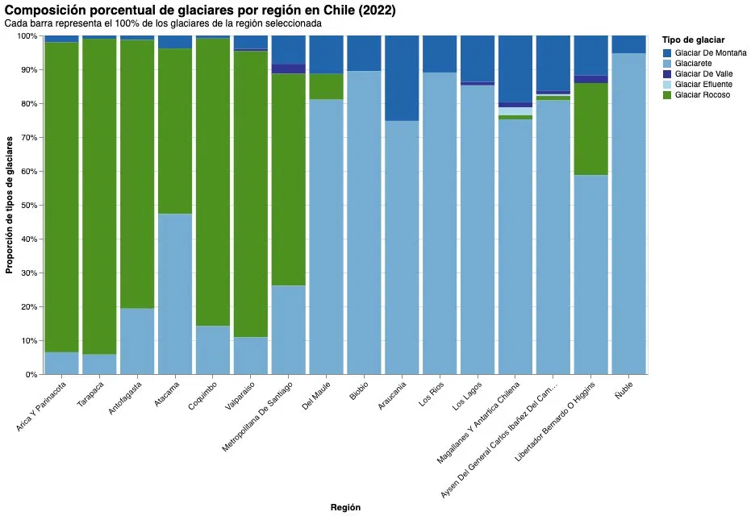

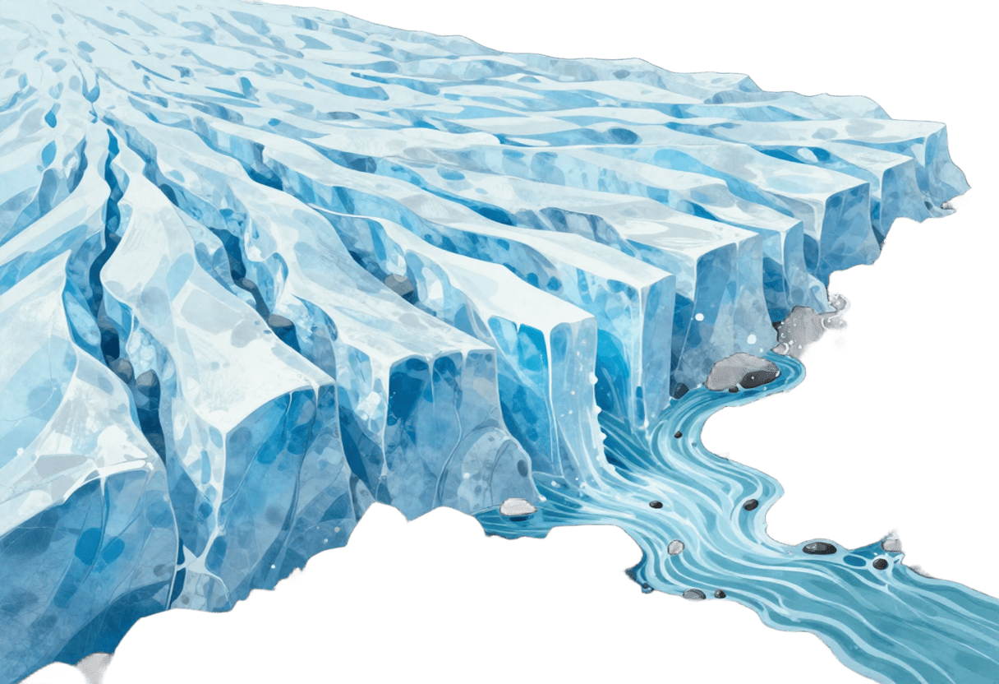
Proyecto Shoan · Periodismo de Datos · 2026
La historia del deshielo en Chile, contada por su guardián
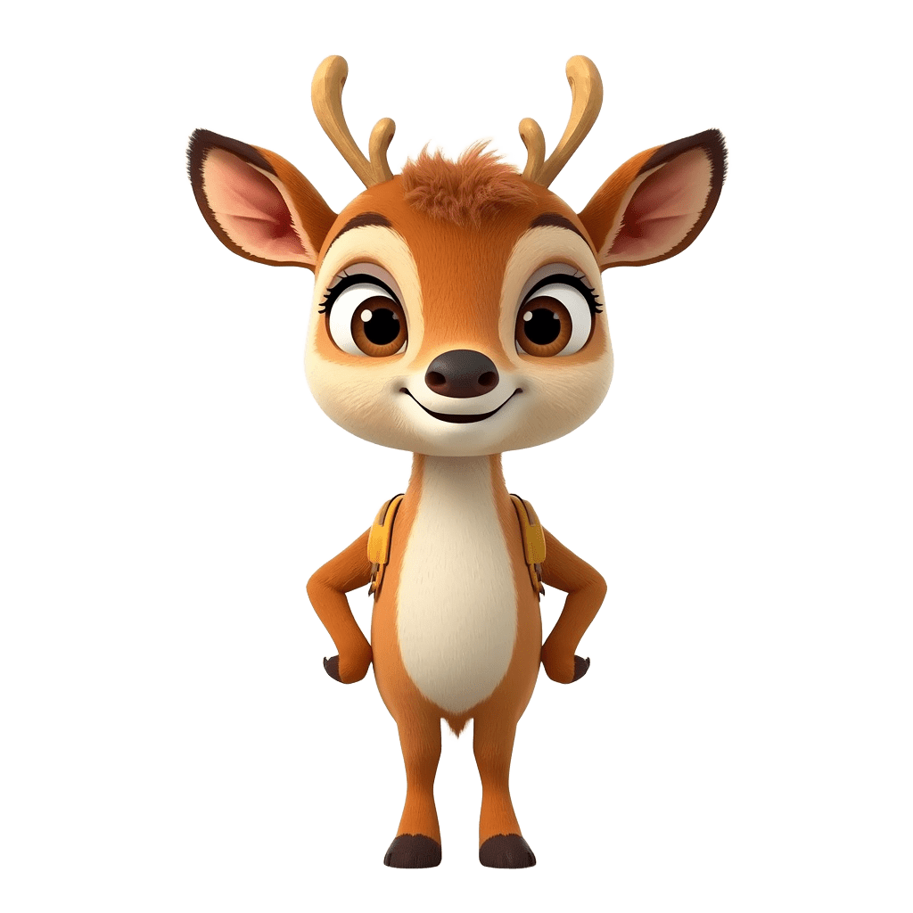
¡Hola! Me llamo Shoan.
Así me llamaban los tehuelches, los primeros pueblos que habitaron estas tierras de la Patagonia.
Ellos vivían junto al hielo y aprendieron a escucharlo. Hoy quiero contarte lo que el hielo está diciendo.
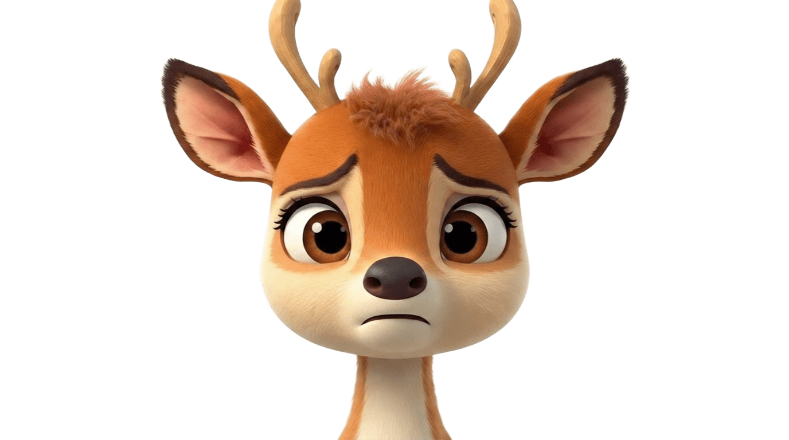
Antes, mi vida en la patagonia era de película. Mis únicas preocupaciones eran escapar de algún puma y encontrar mis plantas favoritas para comer. Pero últimamente, he empezado a notar que algo está cambiando...
Déjame contarte lo que está pasando...
La historia
Soy un huemul y vivo en la Patagonia. Durante toda mi vida, los glaciares de la Cordillera Darwin han sido parte de mi hogar. Ellos alimentan los ríos donde bebo, mantienen vivos los bosques que me protegen y dan vida a muchas otras especies que habitan este lugar.
Hace un tiempo comencé a notar que los inviernos ya no se sentían igual. Los científicos confirmaron que no era solo una impresión: el campo de hielo de la Cordillera Darwin, uno de los más australes del planeta y una de las mayores reservas de agua dulce de Chile, se está derritiendo cada vez más rápido.
El aumento de las temperaturas y la llegada de vientos más cálidos están acelerando el deshielo. Cada año se pierden, en promedio, 18 centímetros de hielo, un cambio que afecta a todo el ecosistema del que dependo para vivir.
de hielo se pierden cada año en la Cordillera Darwin - Fuente: CR2 / DGA
de los glaciares de Sudamérica están en Chile - Fuente: DGA / IPG 2022
proyectos de ley de protección glaciar se han presentado en 20 años sin terminar su tramitación
de capacidad registraron los embalses de Coquimbo en 2024, según datos de la DGA
Aunque a simple vista parezca solo un cambio en el paisaje, el deshielo afecta a todo mi hogar. El agua dulce que liberan los glaciares llega a los fiordos y al canal Beagle, cambia la salinidad del mar y pone en riesgo a las especies marinas, los ecosistemas costeros y a las personas que viven de la pesca.
Y este problema no ocurre solo aquí.
Chile alberga cerca del 80% de los glaciares de Sudamérica, por lo que protegerlos significa cuidar una de las principales reservas de agua del continente. Si el deshielo continúa acelerándose, las consecuencias serán cada vez más graves para la biodiversidad, para las personas... y también para mí y mi familia.
Los datos detrás del hielo
Dos gráficos que se leen juntos. El primero muestra qué tipo de glaciar predomina en cada región. El segundo revela cuántos hay en realidad.
Para entender el problema, los dos son necesarios.
¿Por qué dos gráficos? El gráfico al 100% permite comparar regiones muy distintas, pero oculta cuántos glaciares tiene cada una. Para entender por qué Ñuble, Biobío y La Araucanía se ven "normales" en el primero, hay que mirar el segundo.
Gráfico 1 - Composición proporcional
Cada barra representa el 100% de los glaciares de una región, dividida por tipo. Las regiones están ordenadas de norte a sur.

Gráfico 2 - Distribución absoluta
El mismo desglose por tipo, pero ahora el eje Y muestra el número real de glaciares. Aysén y Magallanes concentran la inmensa mayoría. Ñuble y Biobío casi no se ven.
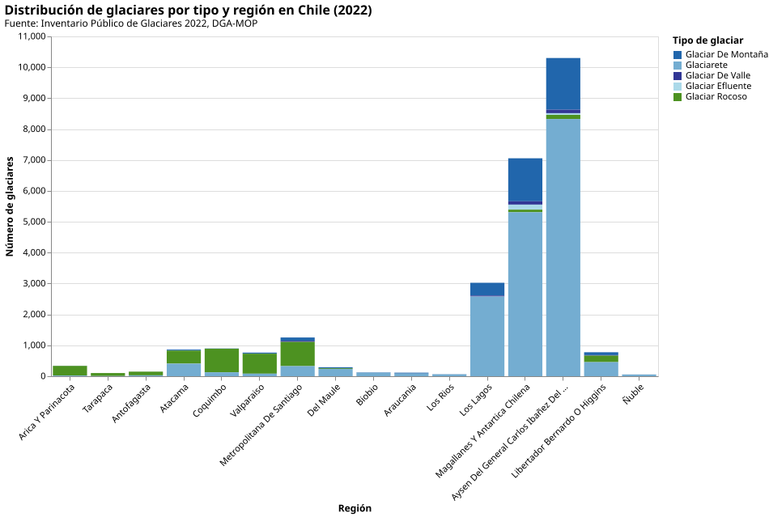
No todos los glaciares son iguales
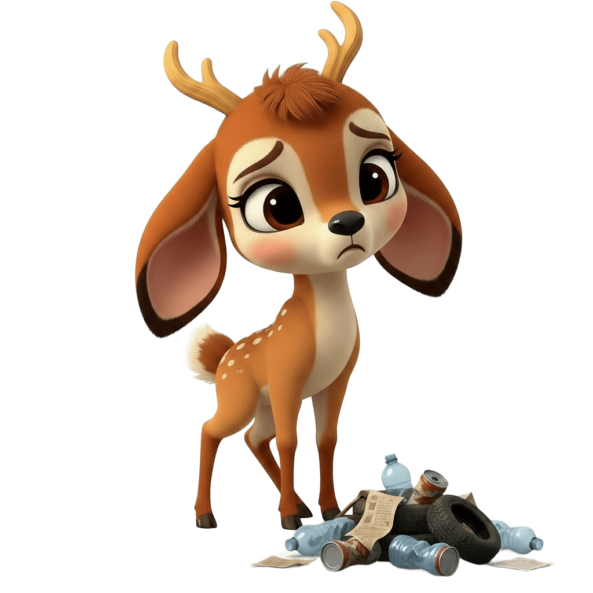
Hay quienes creen que un glaciar es siempre una montaña blanca imponente.
Pero los glaciares del norte de Chile son de roca y polvo. Y los del sur son lenguas de hielo que llegan al mar.
Conocer sus diferencias es clave para entender el problema.
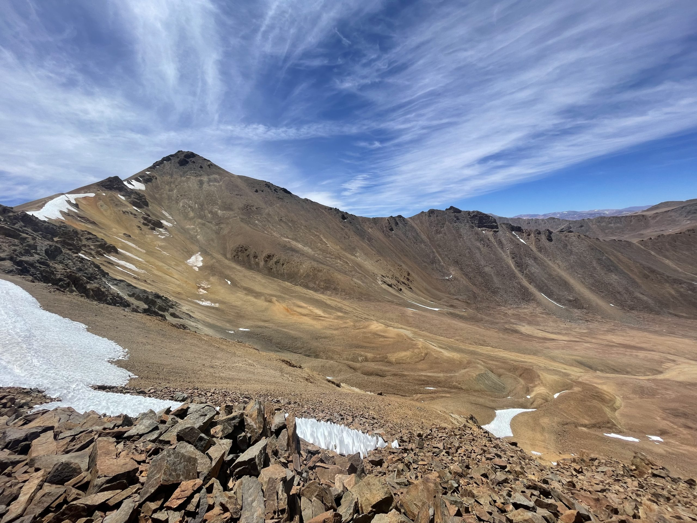
Glaciar rocoso
En las regiones de Arica, Tarapacá y Antofagasta, casi todos los glaciares son rocosos: masas de hielo cubiertas de detritos que actúan como un "termo" natural. Son invisibles para el turista, pero son la principal reserva hídrica de los valles del norte desértico. Si se derriten, el agua no puede recuperarse.
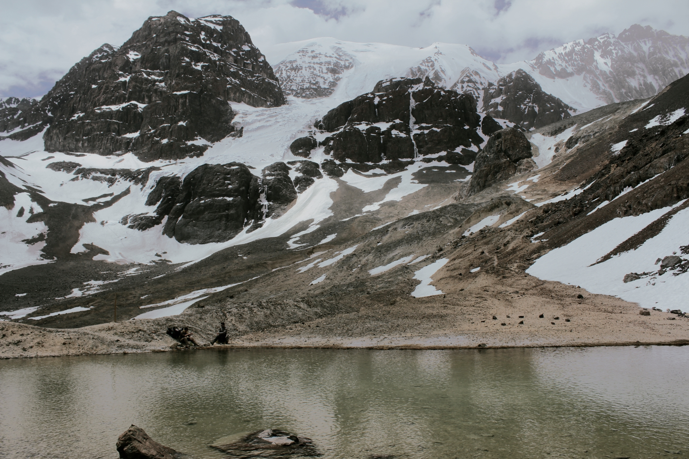
Glaciar de montaña - Glaciar La Paloma
En la zona central de Chile -Valparaíso, Metropolitana, O'Higgins- los glaciares de montaña y los glaciares colgantes como La Paloma alimentan directamente los ríos que abastecen a la mayor parte de la población del país. Su retroceso ya está generando escasez hídrica en verano, la temporada cuando más se necesita el agua.
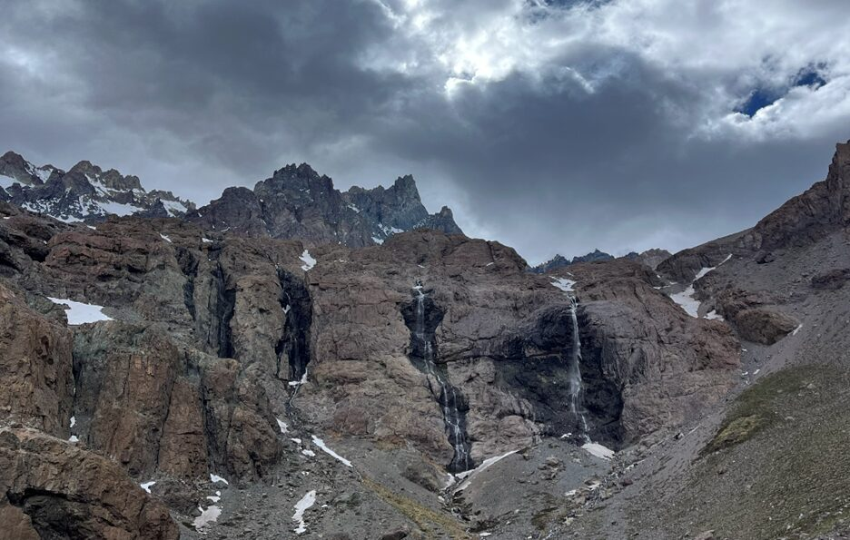
Glaciarete - Cerro Brujo, Cuenca del Tinguiririca, O'Higgins
Los glaciaretes son masas de hielo menores a 0,5 km². Son los más sensibles a los cambios de temperatura: con apenas un grado de más, pueden desaparecer en décadas. En la zona central y sur de Chile son los primeros en verse afectados por el calentamiento global, y los que más difícilmente se recuperan.
Exploración interactiva
Desde el norte árido hasta la Patagonia austral, Chile alberga glaciares de todos los tipos y tamaños. Estos son algunos de los que he visto cambiar a lo largo de mi vida.
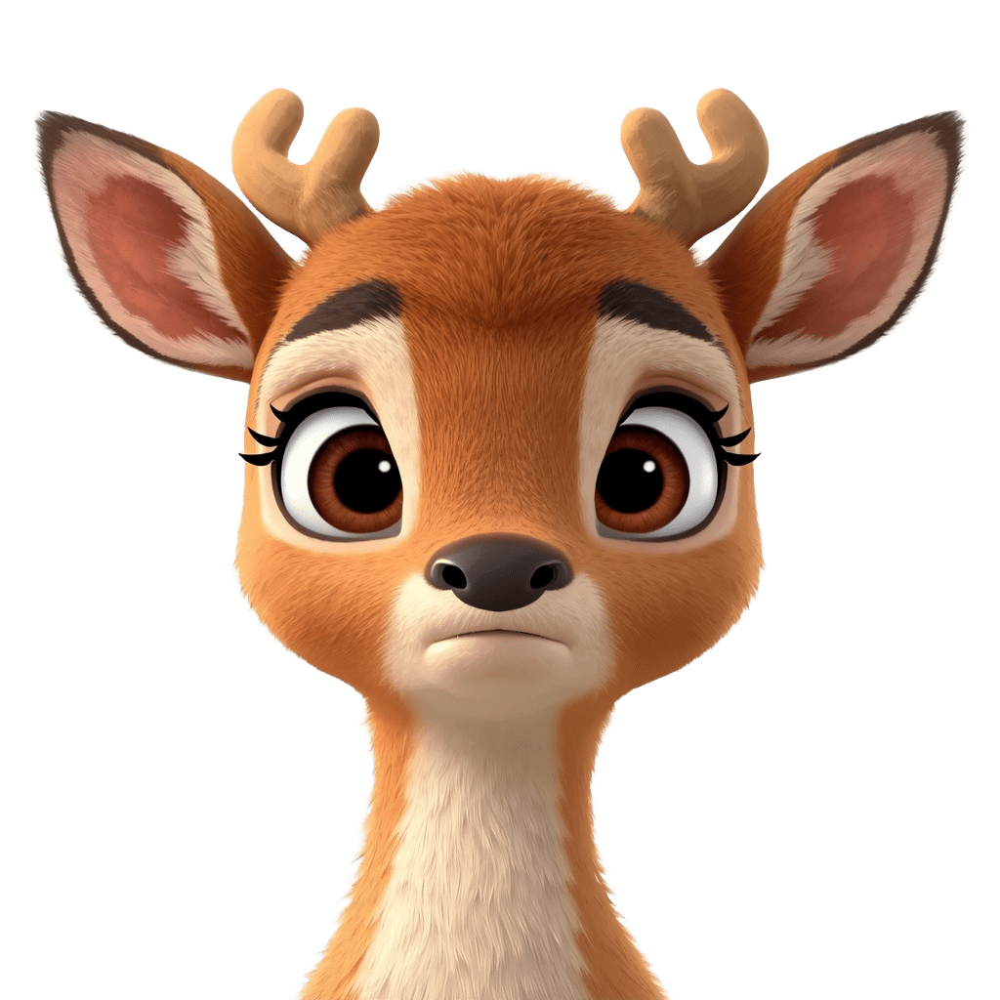
Toca cada glaciar en el mapa para conocer su historia, ubicación y retroceso. El mapa conserva la exploración interactiva del viaje original.
Toca un punto en el mapa
para explorar ese glaciar
Descripción del glaciar.
El glaciar más estudiado del norte chico. Ubicado a 5.550 msnm, es una de las principales reservas hídricas de la cuenca del Elqui. Ha perdido más de un tercio de su superficie desde 1955.
Complejo de glaciares en la cuenca del río Olivares, afluente del Mapocho. Sus aguas son esenciales para el abastecimiento de Santiago. Su retroceso ha acelerado desde los años 2000.
Lengua glaciar que desciende del Campo de Hielo Norte hacia el fiordo homónimo. Es uno de los glaciares más accesibles de la Patagonia y un indicador clave del estado del campo de hielo.
El mayor glaciar de los Campos de Hielo Sur en territorio chileno. Ha retrocedido más de 14 kilómetros desde principios del siglo XX, dejando atrás un lago glaciar de aguas azul turquesa.
Una de las maravillas naturales de Chile: una lengua de hielo que llega hasta el nivel del mar y produce icebergs. Es el glaciar de agua dulce de menor altitud del mundo en el hemisferio norte.
Parte del Campo de Hielo Sur, en el Parque Nacional Torres del Paine. Su retroceso ha creado el lago Geike. Es uno de los glaciares más visitados de la Patagonia y uno de los que más rápido retrocede.
Imponente glaciar del Campo de Hielo Sur, accesible desde el Parque Nacional Torres del Paine. Sus icebergs flotan en el lago Grey. Ha perdido más de 4 km² de superficie en las últimas décadas.
Antes y después
Estas comparaciones mostrarán cómo han cambiado los glaciares entre una imagen histórica y una imagen reciente. Usa las flechas para recorrer cada glaciar.
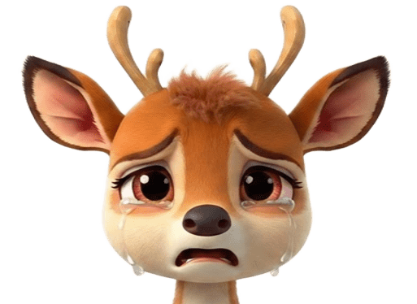
Mira cómo han cambiado en tan pocos años.

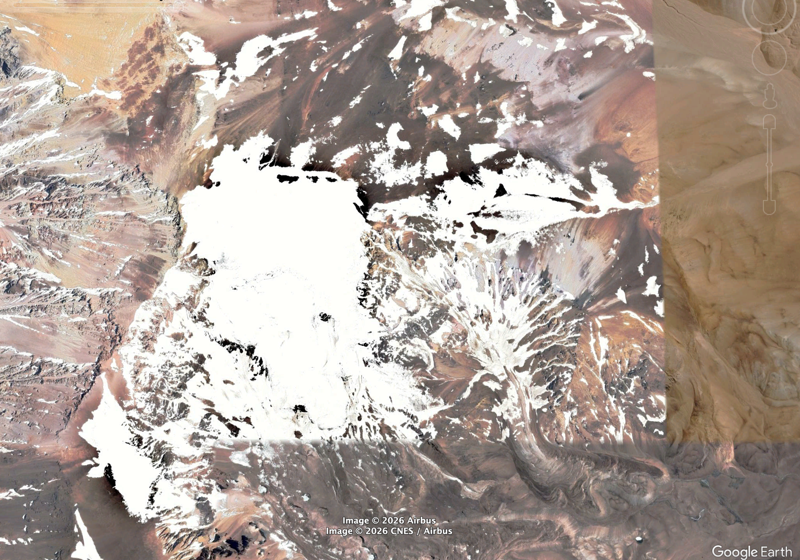

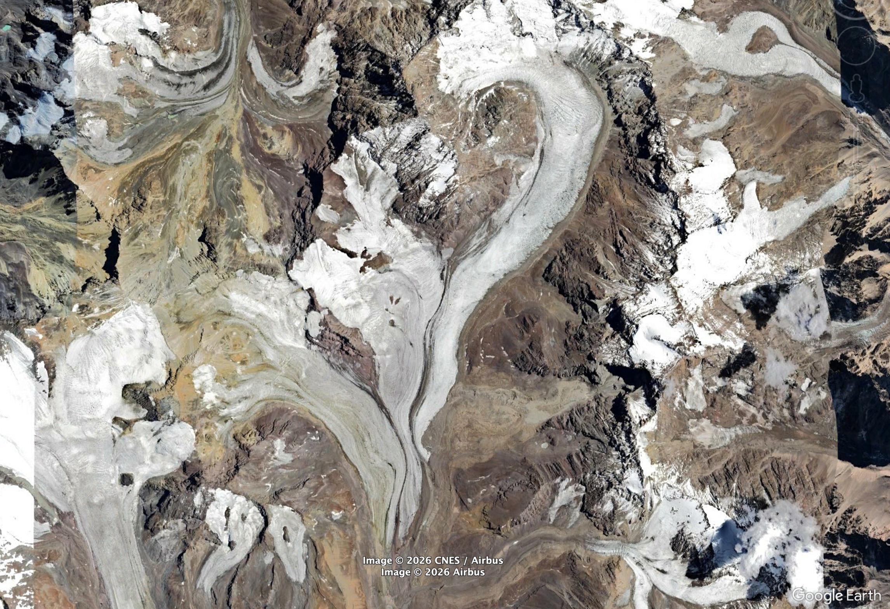

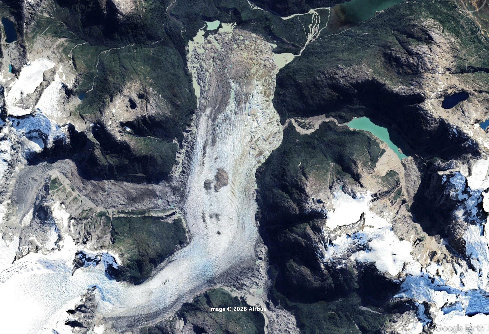

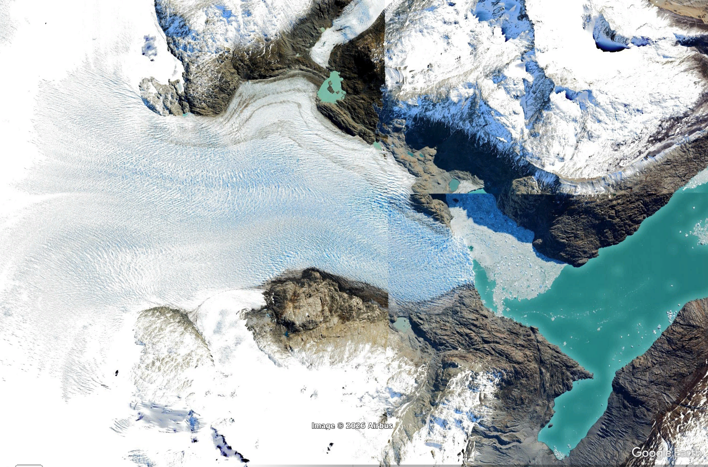

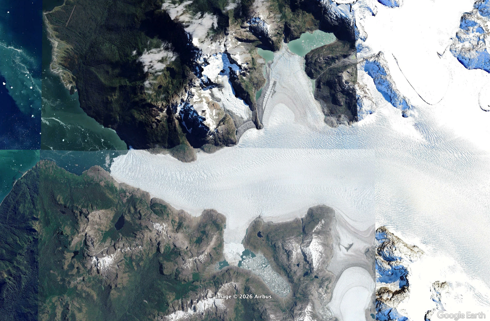

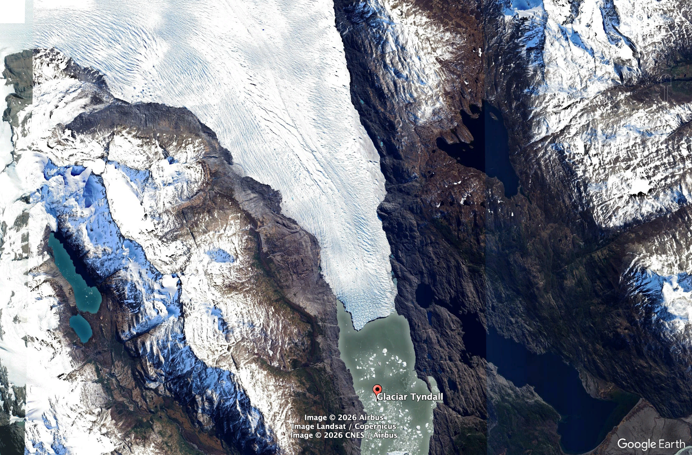

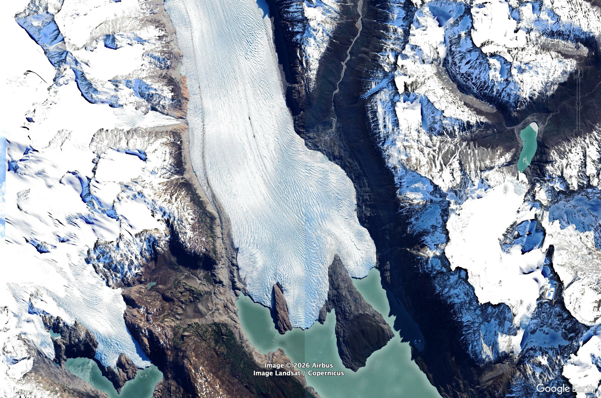
Las personas detrás del deshielo
El agua que se pierde con el hielo no es solo un número en un informe. Es el agua que riega los campos de alguien, la que apaga la sed de una comunidad, la que sostiene un modo de vida que lleva siglos en pie.
Yo veo el río bajar con menos fuerza cada verano. Lo que antes eran torrentes, hoy son hilos de agua. Y los humanos que viven río abajo también lo notan.
La región de Coquimbo lleva más de quince años bajo decretos de escasez hídrica. En el Valle del Elqui, agricultores que cultivaban uva, chirimoyas y hortalizas durante generaciones han tenido que reducir su superficie sembrada a la mitad o directamente abandonar sus campos. Según datos de la DGA, los embalses de la región operaron en 2024 al 16% de su capacidad. "Va a haber zonas en que disminuirá tanto la oferta hídrica que la gente tendrá que dejar el lugar donde vive", advirtió Carlos Olavarría, director ejecutivo del CEAZA.
En el río Choapa, el caudal promediaba apenas 2.400 litros por segundo en 2025 - suficiente para cubrir solo el 20% de los derechos de agua otorgados en la cuenca, que coordina 92 comunidades de aguas. El fenómeno tiene nombre: migración climática. No es gente que se va por pobreza, sino porque la tierra ya no resiste.
Para el pueblo Lickanantay -los atacameños- el agua nunca fue abundante. Aprendieron durante siglos a convivir con la escasez del desierto, a construir sistemas de riego ancestrales y a cultivar en los oasis del norte. En la lengua kunza, el agua se llama puri y es el centro de su vida comunitaria.
Hoy, esa gestión milenaria enfrenta amenazas que van más allá del cambio climático. La extracción de litio en el Salar de Atacama, la minería del cobre y el turismo compiten por el mismo recurso. En junio de 2026, la comunidad de Toconao llevó a tribunales un proyecto minero que amenazaba las fuentes de agua del Salar de Tara, donde nacen los ríos que riegan sus cultivos de papa, porotos y maíz. Para ellos, perder el agua no es solo una crisis económica: es perder la posibilidad de seguir siendo quienes son.
Frente a eso, algunos han respondido con ingenio: adoptando la técnica himalaya de las estupas de hielo - glaciares artificiales piramidales que se forman durante el invierno y liberan agua de forma controlada en verano. Una respuesta ancestral al problema más urgente del siglo.
El deshielo de los glaciares patagónicos no solo afecta la tierra. El agua dulce que liberan los campos de hielo llega a los fiordos y al canal Beagle, alterando la salinidad del mar. Esto afecta directamente a las especies marinas que dependen de un equilibrio preciso entre agua dulce y salada: mitílidos, centollas, merluza austral. Las comunidades que viven de la pesca artesanal en las costas de Magallanes y Aysén ya registran cambios en los caladeros y en las temporadas de pesca. Un cambio que no genera titulares, pero que transforma la vida de miles de familias.
Si nada cambia, mis nietos no conocerán este glaciar. Solo verán las fotos que dejamos nosotros.
¿Me ayudas a proteger mi hogar antes de que sea demasiado tarde?
Los glaciares de Chile son una de las reservas de agua dulce más importantes del planeta. Y están desapareciendo. En 20 años se han presentado 6 proyectos de ley que no terminaron su tramitación.
La ciencia está clara. La urgencia también. Lo que falta es voluntad política y ciudadana.